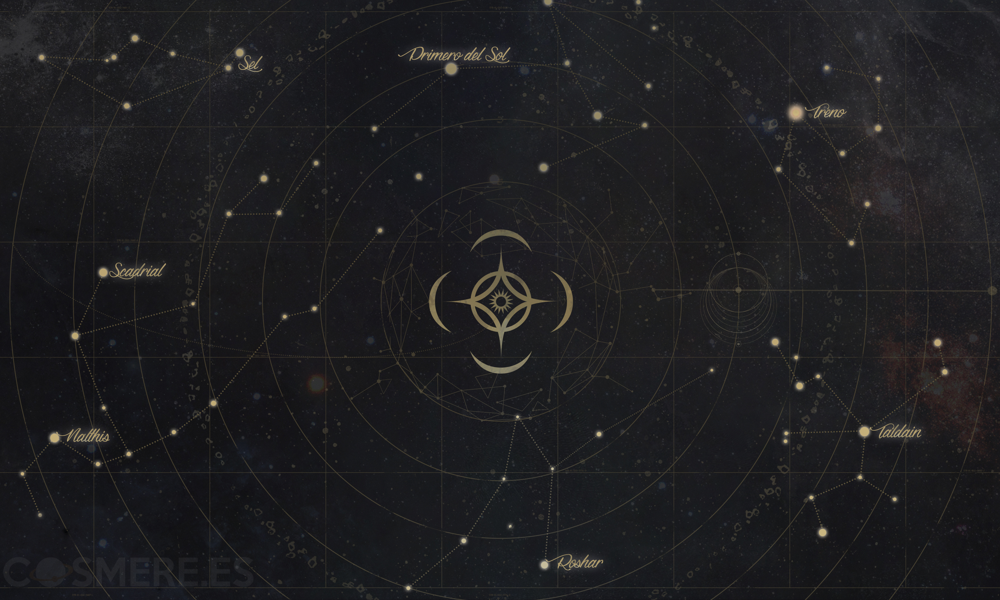

El Cosmere
Cumulo estelar donde se encuentran los planetas del Cosmere

La Fragmentación
Las 16 esquirlas de Adonalsium

Cumulo estelar donde se encuentran los planetas del Cosmere
Las 16 esquirlas de Adonalsium
La investidura, junto a la materia y la energia, es una de las tres esencias del Cosmere. La investidura, como todo en el Cosmere, Existe en los tres reinos: Espiritual, Cognitivo y Físico.
Son los 16 fragmentos de poder que se originaron tras la Fragmentación de Adonalsium. Cada una de ellas recibe un nombre que refleja la naturaleza de su poder. A la perona que toma una de estas esquirlas se le conoce como recipiente
Un planeta que en la epoca del imperio final hasta el Catacendro estuvo envuelto en bruma y ceniza. Su manifestacion de investidura es conocida como Artes Metalicas.
Planeta azotado por la Alta Tormenta, donde los humanos vinculan seres del Reino Cognitivo conocidos como Spren.
Un planeta colores vibrantes. Su manifestacion de investidura es conocida como Alientos.
Un planeta que en la epoca del imperio final hasta el Catacendro estuvo envuelto en bruma y ceniza. Su manifestacion de investidura es conocida como Artes Metalicas.
Un planeta colores vibrantes. Su manifestacion de investidura es conocida como Alientos.
Planeta azotado por la Alta Tormenta, donde los humanos vinculan seres del Reino Cognitivo conocidos como Spren.